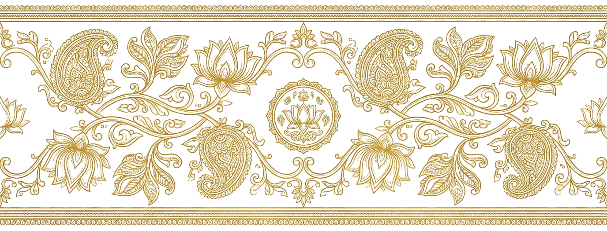

Ask a Malaysian Tamil family where they come from, and many will name a town in Malaysia. Ask which village in Tamil Nadu their great-grandparents left, and the room often goes quiet. Somewhere across three or four generations, the thread that tied the family to a specific place, a specific temple, a specific stretch of red earth, has frayed. At Know Your Family, this is the gap we see most often. The story of Tamil migration to Malaysia is one of the great journeys of the modern world, and yet for countless families the personal version of it has gone unrecorded.
This is not because anyone stopped caring. It is because survival came first, then work, then raising children in a new land, and the asking of questions was always something that could wait until tomorrow. Tomorrow has a way of arriving late. The aim of this article is to walk through how Tamils came to Malaysia, what held the community together once they arrived, and what tends to vanish when no one writes it down.
Ancient roots: Chola sea trade across the Bay of Bengal
The link between the Tamil country and Southeast Asia is far older than the colonial estates most families think of first. Long before British Malaya existed, the Tamil coast was a hub of maritime trade reaching across the Bay of Bengal toward the Malay Peninsula, Sumatra, and beyond. Tamil merchant guilds, the kind remembered in inscriptions as powerful trading bodies, moved textiles, spices, and ideas along these sea lanes.
Under the Chola empire, around a thousand years ago, this maritime reach grew into something remarkable. Chola fleets are well known to have projected power and commerce across the waters toward the Srivijaya realm in maritime Southeast Asia. With the traders travelled language, religion, art, and script. Temple-building, Sanskrit and Tamil words, and Hindu-Buddhist iconography all left lasting marks on the region. The classical Tamil idea of தமிழகம் as a seafaring civilisation is not a romantic exaggeration. It is recorded in stone.
This deep history left echoes that survive in the language itself. Words of Tamil and broader South Indian origin sit quietly inside Malay and the wider regional vocabulary, the residue of centuries of contact through trade and settlement. The exchange ran in both directions, shaping cuisine, kinship customs, and ritual on both shores. None of this was sudden. It accumulated slowly, voyage after voyage, across generations of merchants and sailors who treated the Bay of Bengal less as a barrier than as a road.
Why does this matter to a family in Klang or Ipoh today? Because it reframes the story. Tamils did not simply arrive in Southeast Asia in the nineteenth century as labour. They returned to a region their ancestors had been connected to for a very long time. The colonial wave was the largest chapter, but it was not the first.
A family that knows only the estate it was born on, and not the shore its grandparents sailed from, is reading the last page of a much longer book.
The colonial wave: indentured and kangani labour to British Malaya
The migration most Malaysian Tamil families descend from took shape in the nineteenth and early twentieth centuries, during the era of British rule. As colonial plantation agriculture expanded across Malaya, especially rubber, the demand for labour grew enormous. South India, and the Tamil districts in particular, became a major source of that labour.
Two systems carried people across the water. The earlier indenture system bound workers to fixed contracts in exchange for passage and wages, an arrangement that often left little real freedom. Later, much recruitment moved to the kangani system, in which a foreman, the கங்காணி (kangani), recruited workers from his own home district, frequently from among kin and neighbours. This is why so many estates ended up holding people from the same handful of villages, speaking with the same accent, worshipping the same village deity.
The work was hard and the conditions were often harsh. Tamil labourers cleared jungle and tapped rubber on the estates, laid and maintained the railways that stitched the peninsula together, and worked the docks and public works of the growing ports. It is fair and well documented to say that very large numbers of Tamils made this journey over several decades, settling in concentrations that still shape the community map of Malaysia today. Out of respect for the historical record, the honest thing is to speak in those general terms rather than inventing precise counts.
For an individual family, though, the abstractions dissolve into something intimate. A name on a ship's manifest. A thumbprint on a contract. A young man who boarded at a South Indian port and stepped off at Penang with the name of a relative folded in his memory. That is where a family's own migration story actually lives.
Building a community: temples, Tamil schools, language, and festivals
People do not survive displacement on wages alone. What allowed the Tamil community in Malaya to hold together was the deliberate rebuilding of cultural life in a foreign place. The estate and the town became sites of quiet, determined cultural preservation.
Temples came first for many communities. A shrine to a familiar deity, however modest at the start, gave a scattered workforce a centre of gravity and a calendar. Around it grew the rhythm of festivals. தைப்பூசம் (Thaipusam) at places like Batu Caves became one of the most visible expressions of Tamil Hindu devotion anywhere in the world, while பொங்கல் (Pongal) and Deepavali kept the agricultural and seasonal calendar of the homeland alive far from it.
Language was the other pillar. Tamil schools, often started on the estates themselves, taught children to read and write தமிழ் so that the mother tongue would not die in a single generation. Tamil newspapers, associations, devotional music, and later film and radio all reinforced a shared identity. This is the machinery that carried Tamil culture intact into modern Malaysia, and it is the reason a child in Johor can still sing a song first sung on a farm an ocean away.
What got lost along the way
Here is the difficult part. The community survived, the culture survived, and yet a great deal of specific family knowledge did not. Broad heritage endured while particular memory thinned out. These are the things that tend to disappear, often within living memory:
The ancestral village. Many families can no longer name the exact town or village in Tamil Nadu their forebears left. The original family name and its variations. Names were sometimes shortened, re-spelled by clerks, or changed at the point of arrival, and the older forms slipped away. The கோத்திரம் (gothram), the patrilineal clan lineage. The குலதெய்வம் (kuladeivam), the family's guardian deity and the specific shrine tied to it, knowledge that is almost impossible to recover once the last elder who held it is gone.
And beyond these markers, the oral history itself. The reason they left. The name of the ship or the port. The relative who had gone ahead. The first estate, the first job, the first home. These details rarely live in any official document. They live in a grandparent's memory, and they leave when that memory does.
The erosion follows a predictable pattern. The first generation lived the journey and rarely spoke of its hardships, partly out of a wish to look forward rather than back. The second generation grew up bilingual and busy, building careers and households, and absorbed the broad culture while letting the precise details slide. By the third and fourth generation, the questions finally feel urgent again, but the people who held the answers are often no longer there to ask. This is the quiet arithmetic of forgetting, and it is happening in Malaysian Tamil families right now.
Why it matters now
For the next generation of Malaysian Tamils, born into comfort their great-grandparents could not have imagined, identity is no longer enforced by hardship. It has to be chosen, and you cannot meaningfully choose what you do not know. A young person who can say not just that they are Tamil but that their family came from a named village, carried a particular kuladeivam, and built a life from a specific estate, holds something steadying. It is a sense of where they stand in a long line.
Documenting a family's migration story is how that line stays legible. It does not require an academic or an archive. It begins with a conversation, with an elder, while the elder is still here to have it. What was the village. What was the temple. What was the journey. Which name came first. Writing those answers down, properly and in one place, turns scattered memory into an inheritance that a great-grandchild can hold.
This is the work Know Your Family exists to do. We help Malaysian Tamil families gather, verify, and preserve their origins into a heritage record built to last, so the thread from தமிழகம் to Malaysia is never quietly dropped again.
Preserve your family's journey
Capture the names, the village, and the story while your elders are still here to tell it. Let us help you build a heritage record that lasts.
Explore Our ServicesIf you are not sure where to begin, that is the most common place to start, and the easiest one to move past. Tell us what you already know and what you wish you knew, and we will help you find the rest. You can reach us through our contact page, or look closer at how the process works on our services page. The story of Tamil migration to Malaysia is the story of millions of families. Yours is one of them, and it is worth recording before another tomorrow arrives late.